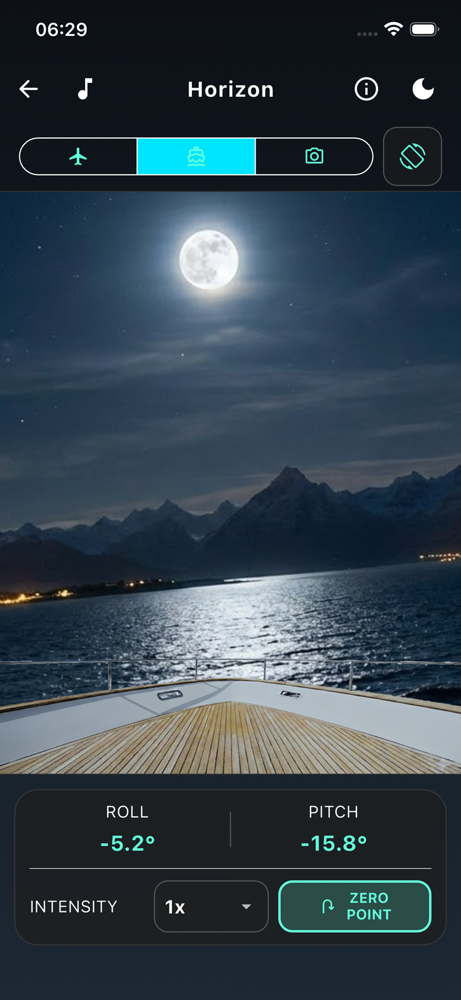
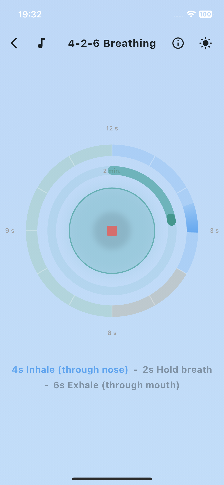

Immediate Relief
The Artificial Horizon
Motion sickness often occurs when your eyes report a standstill – for example, when reading in a car or inside a windowless cruise ship cabin – while your balance organ simultaneously feels the movement. The artificial horizon resolves this conflict by making the real movement visible again.
How to use it: On the screen, you see the bow of a ship and a background image (sea with a mountain range). While the bow remains fixed, the background tilts and moves exactly in sync with the vehicle's actual movements (rolling and pitching) based on your smartphone's sensor data. Your brain thus gets back the missing visual confirmation of the movement.

Immediate Relief
4-2-6 Paced Breathing
This breathing technique specifically activates the body's resting nerve (parasympathetic nervous system). The prolonged exhalation signals absolute safety to the brain and stops the 'fight-or-flight' reaction. This effectively reduces nausea and acute stress.
How to use it: Viativity guides you visually and haptically through the rhythm: inhale for 4 seconds, hold for 2 seconds, exhale for 6 seconds. Apply this for at least 2 minutes when you feel unwell.
